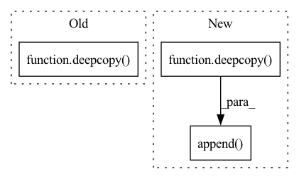

Pattern ID :40214
Before Change
output_constraint, this_info = self.get_one_step_reachable_set(
next_input_constraint, next_output_constraint
)
output_constraints.append(deepcopy( output_constraint) )
info["per_timestep"].append(this_info)
return output_constraints, infoAfter Change
reachable_set, this_info = self.get_one_step_reachable_set(
next_initial_set
)
reachable_sets.append(deepcopy( reachable_set) )
info["per_timestep"].append(this_info)
// [LpConstraint, LpConstraint, ..., LpConstraint] -> LpConstraint(range=(num_timesteps, num_states, 2))
// [PolytopeConstraint, PolytopeConstraint, ..., PolytopeConstraint] -> PolytopeConstraint(A=(num_timesteps, num_facets, num_states))In pattern: SUPERPATTERN
Frequency: 4
Non-data size: 3
Instances Fragment ID: 114193838
Project Name: mit-acl/nn_robustness_analysis
Commit Name: ebf174d510aba4f321ef5ec82b9cda211c5bddac
Time: 2022-12-27
Author: mfe@mit.edu
File Name: nn_closed_loop/nn_closed_loop/propagators/ClosedLoopPropagator.py
M Class Name: ClosedLoopPropagator
N Class Name: ClosedLoopPropagator
M Method Name: get_reachable_set(3)
N Method Name: get_reachable_set(4)
M Parent Class: propagators.Propagator
N Parent Class: propagators.Propagator
M File Name: nn_closed_loop/nn_closed_loop/propagators/ClosedLoopPropagator.py
N File Name: nn_closed_loop/nn_closed_loop/propagators/ClosedLoopPropagator.py
M Start Line: 15
M End Line: 32
N Start Line: 18
N End Line: 37
Before Change
if overapprox:
for i in np.arange(0 + self.dynamics.dt + 1e-10, t_max, self.dynamics.dt):
next_output_constraint = over_approximate_constraint(deepcopy(input_constraint))
next_input_constraint = deepcopy( next_output_constraint)
input_constraint, this_info = self.get_one_step_backprojection_set(
next_output_constraint, next_input_constraint, num_partitions=num_partitions, overapprox=overapprox
)
input_constraints.append(deepcopy(input_constraint))After Change
for output_constraint in output_constraint_list:
input_constraints, tightened_infos = self.get_single_target_backprojection_set(output_constraint, input_constraint, t_max=t_max, num_partitions=num_partitions, overapprox=overapprox)
input_constraint_list.append(deepcopy( input_constraints) )
tightened_infos_list.append(deepcopy(tightened_infos))
return input_constraint_list, tightened_infos_list
Fragment ID: 114193839
Project Name: mit-acl/nn_robustness_analysis
Commit Name: 042a46d2012f8c1862cfedb24d600fbbad1ac007
Time: 2022-03-09
Author: nrober1122@gmail.com
File Name: nn_closed_loop/nn_closed_loop/propagators/ClosedLoopPropagator.py
M Class Name: ClosedLoopPropagator
N Class Name: ClosedLoopPropagator
M Method Name: get_backprojection_set(6)
N Method Name: get_backprojection_set(6)
M Parent Class: propagators.Propagator
N Parent Class: propagators.Propagator
M File Name: nn_closed_loop/nn_closed_loop/propagators/ClosedLoopPropagator.py
N File Name: nn_closed_loop/nn_closed_loop/propagators/ClosedLoopPropagator.py
M Start Line: 38
M End Line: 68
N Start Line: 39
N End Line: 52
Before Change
labels = sorted(documents, reverse=reverse, key=lambda x: x[score_field])
labels = labels[:max_number_of_labels]
labels = [l for l in labels if l[score_field] > similarity_threshold]
new_labels = deepcopy( labels)
// remove labels from labels
[l.pop(vector_field) for l in new_labels]
return new_labels
After Change
label_text = self.get_field(self.label_field, label)
label_texts = self.get_field_across_documents(self.label_field, new_labels)
if label_text not in label_texts:
new_labels.append(deepcopy( label) )
counter += 1
if counter == max_number_of_labels:
break
// new_labels = deepcopy(labels) Fragment ID: 114193832
Project Name: relevanceai/relevanceai
Commit Name: 93ce201855d6052bdf1dec80609b7073abb4c379
Time: 2022-07-27
Author: jacky.wong@relevance.ai
File Name: relevanceai/operations_new/label/transform.py
M Class Name: LabelTransform
N Class Name: LabelTransform
M Method Name: cosine_similarity(8)
N Method Name: cosine_similarity(8)
M Parent Class: TransformBase
N Parent Class: TransformBase
M File Name: relevanceai/operations_new/label/transform.py
N File Name: relevanceai/operations_new/label/transform.py
M Start Line: 196
M End Line: 199
N Start Line: 197
N End Line: 210
Before Change
self, output_constraint, input_constraint, propagator, t_max, num_partitions=None, overapprox=False, refined=False
):
input_constraint_, info = propagator.get_backprojection_set(
output_constraint, deepcopy( input_constraint) , t_max, num_partitions=num_partitions, overapprox=overapprox, refined=refined
)
input_constraint = input_constraint_.copy()
After Change
refined=refined,
)
backprojection_sets.append(deepcopy( backprojection_set_this_timestep) )
info["per_timestep"].append(info_this_timestep)
else:
for i in np.arange(0 + propagator.dynamics.dt + 1e-10, t_max, propagator.dynamics.dt):
// TODO: Support N-step backprojection in the under-approximation case Fragment ID: 114193829
Project Name: mit-acl/nn_robustness_analysis
Commit Name: 63e79909e36636ad1ba6c548408a853c1564488d
Time: 2022-06-08
Author: mfe@mit.edu
File Name: nn_closed_loop/nn_closed_loop/partitioners/ClosedLoopPartitioner.py
M Class Name: ClosedLoopPartitioner
N Class Name: ClosedLoopPartitioner
M Method Name: get_backprojection_set(8)
N Method Name: get_backprojection_set(8)
M Parent Class: partitioners.Partitioner
N Parent Class: partitioners.Partitioner
M File Name: nn_closed_loop/nn_closed_loop/partitioners/ClosedLoopPartitioner.py
N File Name: nn_closed_loop/nn_closed_loop/partitioners/ClosedLoopPartitioner.py
M Start Line: 375
M End Line: 380
N Start Line: 527
N End Line: 565